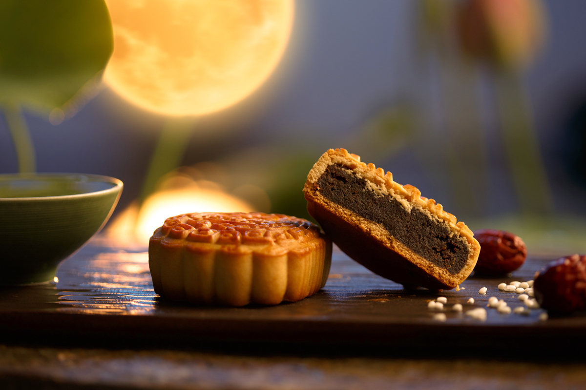
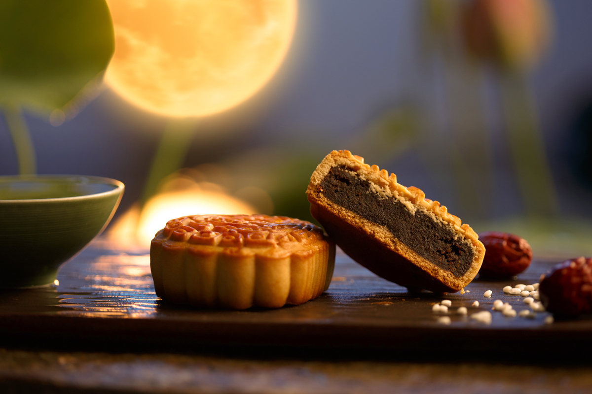
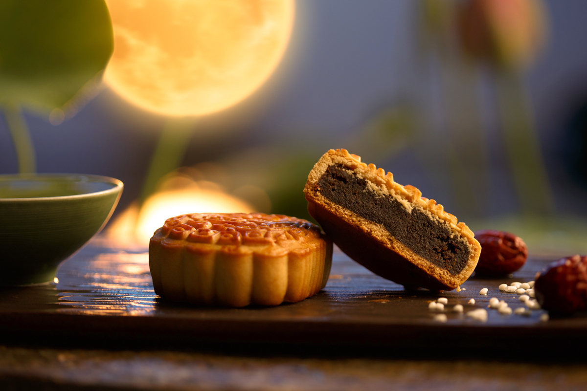
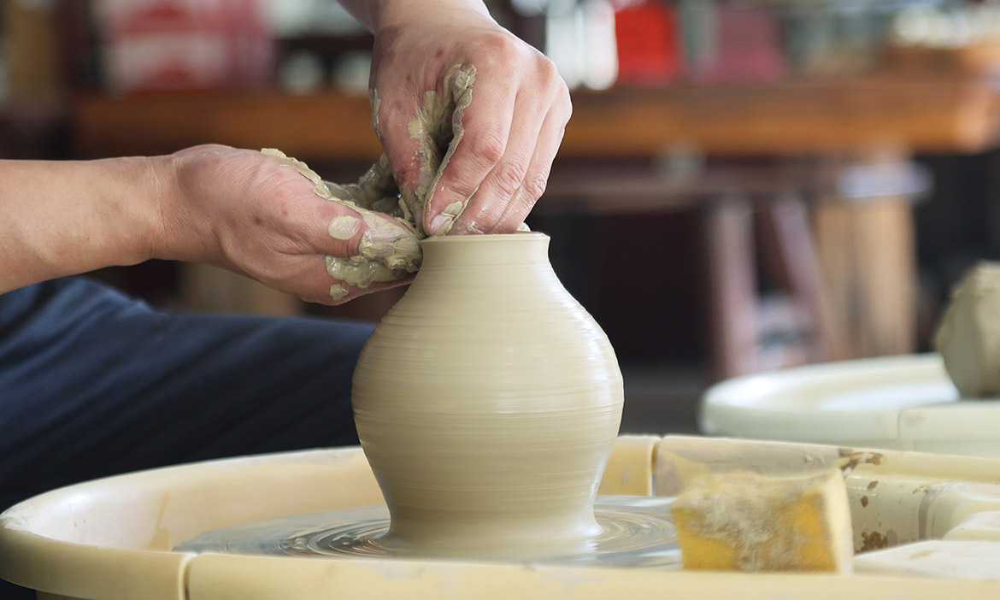
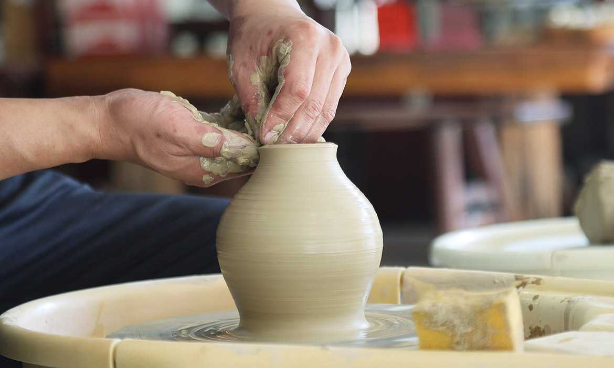

| Assignment Introduction | Festivals | Tourist Attractions | Taiwan Ecology | History |
| National Parks | Indigenous Peoples | Traditional Crafts | Monuments Introduction | National Palace Museum |
In Taiwan, whether it's festivals, tourist attractions, ecological environment, history, indigenous culture, national parks, traditional crafts, or historic sites, as well as the National Palace Museum, are all unique and fascinating parts of this land. Taiwan, with its rich and diverse culture and scenery, attracts visitors and explorers from all over the world, making people curious and longing for this land.
Moving on, let's delve into Taiwan's festivals. During the Chinese New Year, every corner of Taiwan is filled with a jubilant atmosphere of red. People busily shop for New Year goods, preparing to welcome the arrival of the new year. The Mid-Autumn Festival is a wonderful moment for family reunions, where people enjoy delicious mooncakes together, gaze at the full moon, and share emotions and warmth with each other. In addition, there are also the dragon boat races of the Dragon Boat Festival and the romantic atmosphere of Qixi, the Chinese Valentine's Day. These festivals make Taiwan's traditional culture even more colorful and vibrant.

Furthermore, we cannot overlook Taiwan's tourist attractions. From the magnificent Taroko National Park to the picturesque Sun Moon Lake, from the ancient town of Jiufen to the modern Taipei 101, each destination has its own unique characteristics, leaving people in awe and feeling refreshed. The hot springs of Yangmingshan and the sacred trees of Alishan are also natural wonders not to be missed. Whether it's hiking in the mountains or exploring modern architecture in the city, each place showcases Taiwan's diverse charm.
Additionally, when it comes to Taiwan's national parks, these beautiful natural reserves are not only home to magnificent landscapes but also a treasure trove of biodiversity. From the grand canyons of Taroko National Park to the high mountain environments of Yushan National Park, each place is worth exploring, allowing people to experience the wonders of nature up close. The marine ecology of Kenting and the alpine flora and fauna of Shei-Pa National Park also make them paradises for nature enthusiasts.

Moreover, Taiwan is famous for its distinctive ecosystems and unique biodiversity. From temperate forests to subtropical rainforests, and from high-altitude grasslands to coastal wetlands, Taiwan boasts a rich variety of habitats. Many indigenous species, such as the Formosan black bear and the Taiwan blue magpie, thrive in these environments. These invaluable ecological assets not only enhance Taiwan's natural legacy but also attract ecologists and nature enthusiasts from across the globe.


Furthermore, Taiwan's indigenous culture is an indispensable part of this land. Their traditional songs and dances, handicrafts, and reverence for nature all showcase their deep emotional connection to the land. Events like the Harvest Festival of the Amis tribe and the facial tattoo tradition of the Atayal tribe contribute to the richness of Taiwan's cultural diversity.
Taiwan has a long and rich history, from the historical buildings of the Dutch colonial period to the memorial halls of the 228 Incident. Every historic site bears witness to the changes and development of this island, deepening people's understanding of its history and culture. The ancient forts of the Qing Dynasty, buildings from the Japanese colonial era, and the modernization after the war have all left profound marks on different eras.


Additionally, Taiwan's traditional craftsmanship is also worth mentioning, such as paper cutting, embroidery, ceramics, and more. These crafts carry a long history and culture, reflecting the wisdom and creativity of the Taiwanese people. The woodcarving of Lukang, the pottery of Yingge, and the weaving of ramie in Miaoli, these traditional crafts not only preserve ancient techniques but also thrive in modern designs.
 

Lastly, we cannot overlook Taiwan's National Palace Museum, a treasure trove that gathers the five thousand years of Chinese civilization, showcasing abundant cultural heritage and artistic masterpieces. It attracts numerous tourists and scholars to visit and study. From bronzeware to calligraphy, from ceramics to jade artifacts, each piece tells a story, allowing people to experience the profound cultural heritage while admiring them.

In conclusion, Taiwan, with its diverse culture, captivating scenery, and rich history, has become a treasure trove worth exploring. It attracts visitors from around the world and fills them with curiosity and longing for this land. Every corner, every story here awaits discovery and sharing. Whether immersing oneself in natural beauty or exploring historical relics, Taiwan offers every visitor a unique and unforgettable experience.